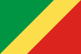

WDD 131 - Dynamic Web Fundamentals - Paulle Mahouangou
About Me
My name is Paulle Mahouangou. I am from the Republic of Congo, I was born at Brazzaville.
I have one older sister and one younger brother.
I am currently living in France since 3 years. I actually work as an administrative assistant at the Paris temple patron housing.
I like singing and listening to music. I always have a song in my head, it helps me focus and keep good thoughts.
The Republic of Congo

Official Flag
The Republic of Congo, also known as Congo-Brazzaville, is a Central African country with tropical forest reserves that
are home to gorillas. Its capital Brazzaville faces Kinshasa, the capital of the Democratic Republic of Congo, on the
other side of the Congo River (two of the world's closest capitals).